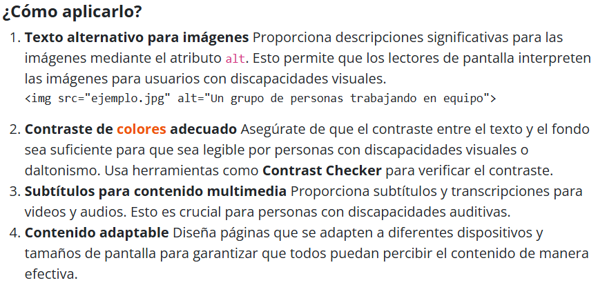
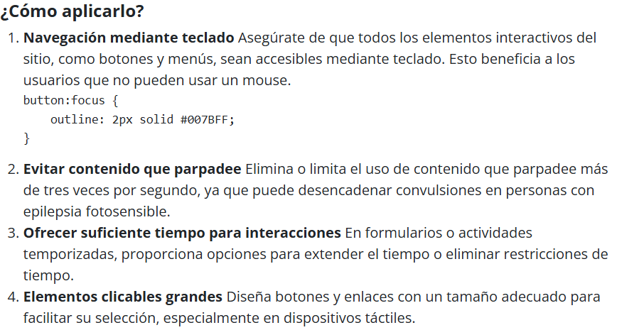
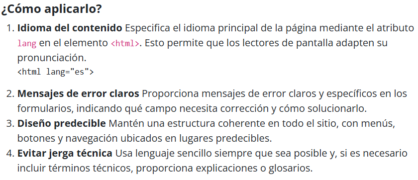
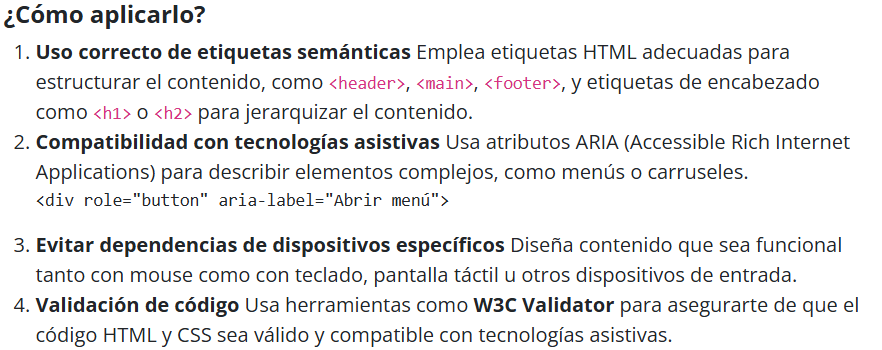

Que es accesibilidad web?
La accesibilidad web integra elementos de programación, diseño y tecnología con el objetivo de crear un entorno digital inclusivo, en el que cualquier persona pueda comprender, aprender, navegar e interactuar plenamente con los contenidos en línea.
La iniciativa WAI lidera a nivel global los esfuerzos en accesibilidad web, asegurándose de que los sitios y sus contenidos cumplan con estándares de usabilidad y accesibilidad universal. Su objetivo es garantizar que cualquier persona, independientemente de sus limitaciones físicas, cognitivas o sensoriales, pueda navegar por Internet sin obstáculos. Además, los sitios web accesibles obtienen beneficios adicionales, como un mayor número de visitantes potenciales, tiempos de carga más rápidos, mejor posicionamiento en buscadores, una reputación online fortalecida (TrustRank), ahorro en el uso de ancho de banda y una mayor compatibilidad con distintos navegadores y dispositivos.
Importancia
La accesibilidad web es esencial porque garantiza que todas las personas, incluidas aquellas con discapacidades físicas, sensoriales o cognitivas, puedan utilizar Internet sin barreras. Además de promover la inclusión y la igualdad, mejora la experiencia general de los usuarios, ya que muchas de sus prácticas ,como una navegación clara o textos alternativos, benefician a todos. También representa una ventaja para las organizaciones, ya que permite llegar a un público más amplio, mejora el posicionamiento en buscadores, reduce costos a largo plazo y ayuda a cumplir con las normativas legales sobre accesibilidad digital.
La accesibilidad web es fundamental por las siguientes razones:
Inclusión social y equidad
Facilita el acceso a los contenidos y servicios digitales para personas con discapacidades visuales, auditivas, cognitivas o motoras, asegurando su derecho a participar activamente en el entorno digital.
Mejora en la experiencia del usuario
Características como una navegación intuitiva, contraste adecuado, uso de transcripciones y compatibilidad con el teclado no solo ayudan a personas con discapacidades, sino que mejoran la usabilidad para todos los usuarios.
Mayor alcance y ventajas económicas
Al hacer los sitios accesibles, se llega a una audiencia más amplia, incluyendo a millones de personas con discapacidad, lo que puede traducirse en más visitas, mayor lealtad del usuario y aumento en las conversiones. También contribuye a un mejor posicionamiento en buscadores y a una reducción en costos legales y técnicos.
Cumplimiento de normativas
Numerosas legislaciones en todo el mundo, como la ADA en Estados Unidos o la Ley Europea de Accesibilidad, requieren que los sitios web sean accesibles; no cumplir con estas normativas puede conllevar sanciones económicas o acciones legales.
Principios fundamentales de la accesibilidad web según las WCAG:
Perceptible
La información y los componentes de la interfaz deben mostrarse de forma que los usuarios puedan captarlos a través de los sentidos, como la vista o el oído.
Operable
La interfaz debe ser funcional para todos, permitiendo la interacción sin necesidad de contar con capacidades particulares o utilizar una tecnología determinada.
Comprensible
El contenido y la interfaz deben ser claros, sencillos de interpretar y comportarse de manera previsible para los usuarios.
Robusto
El contenido debe ser compatible y entendible por diversos navegadores, dispositivos y herramientas de asistencia, garantizando su correcto funcionamiento a lo largo del tiempo.
